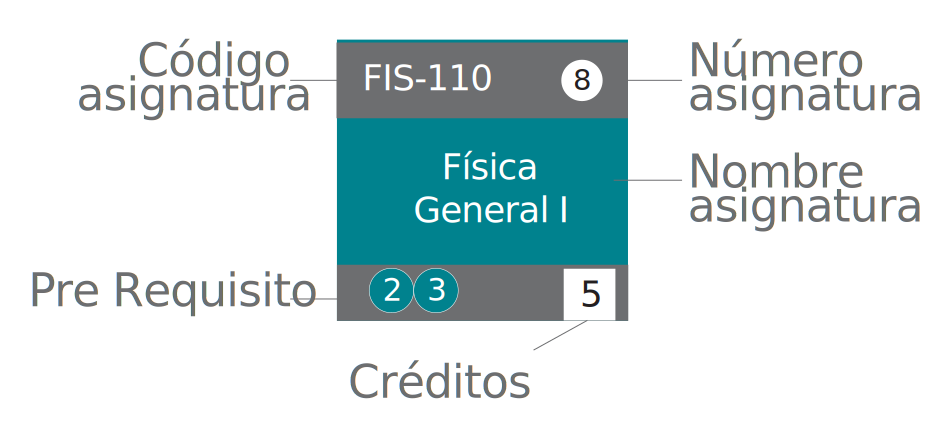

Bienvenida/o a la malla curricular interactiva de Ingeniería Civil Eléctrica de la Pontificia Universidad Católica de Valparaíso. Marca los ramos que ya aprobaste y descubre automáticamente qué asignaturas puedes tomar el siguiente semestre según los prerrequisitos.

Hecho con el código base de Sebastián Aedo y editado por María Teresa Zúñiga. Código fuente